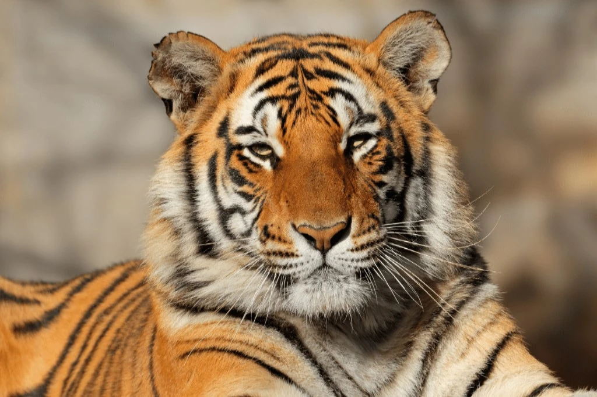
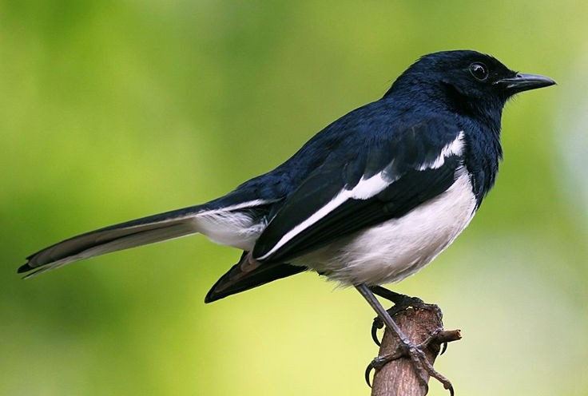

বিংশ শতাব্দীর প্রথমার্ধে বিলুপ্ত বাংলা বাঘ ছিল একটি অসাধারণ প্রাণী, বাংলাদেশের বনাঞ্চলে এর বিচরণ ছিল। এটি তার স্বতন্ত্র ডোরাকাটা দাগ এবং ভীতিকর উপস্থিতির জন্য পরিচিত ছিল, যা বাংলার প্রাকৃতিক ঐতিহ্যের প্রতীক ছিল।
learn more
সুন্দরবনের চিত্রা হরিণ বাংলাদেশের এক দৃষ্টিনন্দন বন্যপ্রাণী। এদের লালচে-বাদামী লোমের উপর সাদা ফোঁটা দেখা যায়। দলবদ্ধভাবে বিচরণ করে এবং বাঘের প্রধান শিকার। শিকার ও বাসস্থান সংকটে এদের অস্তিত্ব বিপন্ন। এদের সংরক্ষণে সকলের সহযোগিতা প্রয়োজন।
learn more
 দোয়েল বাংলাদেশের জাতীয় পাখি। এটি প্যাসেরিফরম (অর্থাৎ চড়াই-প্রতিম) বর্গের অন্তর্গত একটি ছোট আকারের পাখি। এর বৈজ্ঞানিক নাম Copsychus saularis। সাদা-কালোয় সজ্জিত এই পাখিটি তার সুরেলা কণ্ঠের জন্য পরিচিত। দোয়েল সাধারণত ১৯-২০ সেন্টিমিটার লম্বা হয়।
learn more
ইলিশ বাংলাদেশের জাতীয় মাছ। এটি একটি সুস্বাদু সামুদ্রিক মাছ যা ডিম ছাড়ার জন্য নদীতে আসে। পদ্মা, মেঘনা ও যমুনা নদীতে প্রচুর ইলিশ পাওয়া যায়। অর্থনীতিতে এর অবদান অনস্বীকার্য। বর্তমান সময় অনুযায়ী, বাংলাদেশে এখন ইলিশের ভরা মৌসুম নয়। বাজারে তাজা ও ভালো মানের ইলিশ পেতে কিছুটা সমস্যা হতে পারে।
learn more